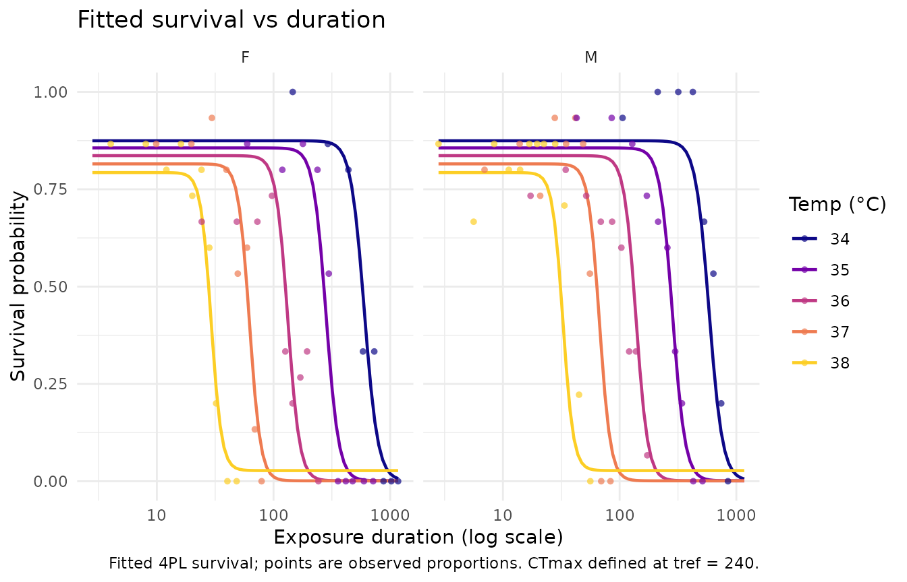

Case 4: Drosophila suzukii mortality
Source:vignettes/case-study-suzukii.Rmd
case-study-suzukii.RmdThis article follows the mortality arm of Case 4 in the bayesTLS
supplement, using the same individual records, cell aggregation,
beta-binomial response, four-hour reference time, and absolute-LT50
comparison.
library(freqTLS)
#> freqTLS 0.1.0
#> Please cite: Noble DWA, Arnold PA, Nakagawa S & Pottier P (2026) A flexible
#> modelling framework for estimating thermal tolerance and sensitivity.
#> bioRxiv. doi:10.64898/2026.07.16.738378
#> Run citation("freqTLS") for all entries.
#>
#> Tutorial & online vignette: https://itchyshin.github.io/freqTLS/
data(dsuzukii)Exact mortality aggregation
mort <- stats::aggregate(
cbind(n_dead = as.integer(dsuzukii$dead),
n_total = rep.int(1L, nrow(dsuzukii))) ~ temp + time + sex,
data = dsuzukii,
FUN = sum
)
mort$n_surv <- mort$n_total - mort$n_dead
mort_std <- standardize_data(
mort, temp = "temp", duration = "time",
n_total = "n_total", n_surv = "n_surv", duration_unit = "minutes"
)Separate-sex fits
Separate fits reproduce the study-facing comparison before the joint model. They use the same formula components as the joint fit with one sex at a time.
sex_fits <- lapply(split(mort, mort$sex), function(d) {
d_std <- standardize_data(
d, temp = "temp", duration = "time",
n_total = "n_total", n_surv = "n_surv", duration_unit = "minutes"
)
fit_4pl(
d_std, ctmax = ~ 1, z = ~ 1,
low = ~ temp_c, up = ~ temp_c, k = ~ temp_c,
family = "beta_binomial", t_ref = 240,
method = "wald", quiet = TRUE
)
})
lapply(sex_fits, diagnose_tdt_fit)
#> $F
#> # A tibble: 1 × 9
#> converged pd_hessian max_abs_gradient gradient_pass optimizer logLik n_params
#> <lgl> <lgl> <dbl> <lgl> <chr> <dbl> <int>
#> 1 TRUE TRUE 0.000000144 TRUE nlminb -72.7 9
#> # ℹ 2 more variables: AIC <dbl>, all_pass <lgl>
#>
#> $M
#> # A tibble: 1 × 9
#> converged pd_hessian max_abs_gradient gradient_pass optimizer logLik n_params
#> <lgl> <lgl> <dbl> <lgl> <chr> <dbl> <int>
#> 1 TRUE TRUE 0.0000800 TRUE nlminb -89.5 9
#> # ℹ 2 more variables: AIC <dbl>, all_pass <lgl>
separate_table <- do.call(rbind, lapply(names(sex_fits), function(sex_level) {
ans <- tls(sex_fits[[sex_level]], lethal = FALSE, method = "wald")$summary
ans$sex <- sex_level
names(ans)[names(ans) == "median"] <- "estimate"
ans[c("sex", "quantity", "estimate", "lower", "upper")]
}))
separate_table
#> # A tibble: 4 × 5
#> sex quantity estimate lower upper
#> <chr> <chr> <dbl> <dbl> <dbl>
#> 1 F CTmax 35.2 35.1 35.3
#> 2 F z 3.04 2.87 3.23
#> 3 M CTmax 35.2 35.1 35.3
#> 4 M z 2.95 2.76 3.16Joint direct model
The direct joint model assigns separate CTmax and
z coordinates to each sex and places centred temperature on
low, up, and k. The shape
coefficients are experimental in freqTLS. The very large standard errors
that can arise for the shape slopes are an identifiability result and
must remain visible.
mort_fit <- fit_4pl(
mort_std,
ctmax = ~ 0 + sex,
z = ~ 0 + sex,
low = ~ temp_c,
up = ~ temp_c,
k = ~ temp_c,
family = "beta_binomial",
t_ref = 240,
method = "wald",
quiet = TRUE
)
diagnose_tdt_fit(mort_fit)
#> # A tibble: 1 × 9
#> converged pd_hessian max_abs_gradient gradient_pass optimizer logLik n_params
#> <lgl> <lgl> <dbl> <lgl> <chr> <dbl> <int>
#> 1 TRUE TRUE 0.0000800 TRUE nlminb -167. 11
#> # ℹ 2 more variables: AIC <dbl>, all_pass <lgl>
check_tls(mort_fit)The optimizer and Hessian pass, but the lower-asymptote coefficients remain weakly identified. Their actual estimates and standard errors are shown rather than hidden behind the successful convergence summary.
mort_shape <- subset(
mort_fit$fit$estimates,
grepl("^(low|up|k):", parameter),
select = c(parameter, estimate, std.error)
)
mort_shape
#> parameter estimate std.error
#> 1 low:(Intercept) -29.26008064 2056.8348181
#> 2 low:temp_c 13.92824301 1086.1951816
#> 3 up:(Intercept) 0.70428049 0.1832665
#> 4 up:temp_c -0.18786584 0.1203898
#> 5 k:(Intercept) 2.98857053 0.1578812
#> 6 k:temp_c 0.06581904 0.0997330
mort_relative <- tls(mort_fit, by = "sex", lethal = FALSE, method = "wald")$summary
names(mort_relative)[names(mort_relative) == "median"] <- "estimate"
mort_relative
#> # A tibble: 4 × 5
#> sex quantity estimate lower upper
#> <chr> <chr> <dbl> <dbl> <dbl>
#> 1 F CTmax 35.2 35.1 35.3
#> 2 M CTmax 35.2 35.1 35.3
#> 3 F z 3.05 2.88 3.22
#> 4 M z 3.19 2.99 3.42The study-facing threshold is absolute LT50. The fitted backbone uses the relative coordinate. Because the shape also changes with assay temperature, the absolute 50% point is obtained by solving the fitted survival curve at 240 minutes for each sex.
mort_lt50 <- data.frame(
sex = mort_fit$fit$group_levels,
LT50_240_min = vapply(mort_fit$fit$group_levels, function(sex_level) {
objective <- function(temp) {
predict(
mort_fit,
data.frame(temp = temp, duration = 240, group = sex_level),
type = "survival"
) - 0.5
}
uniroot(objective, range(mort$temp), tol = 1e-10)$root
}, numeric(1)),
interval_method = "none: exact-model bootstrap unstable"
)
mort_lt50
#> sex LT50_240_min interval_method
#> F F 35.15584 none: exact-model bootstrap unstable
#> M M 35.17396 none: exact-model bootstrap unstableThis is an ML point comparison, not a confidence interval. The exact-model parametric bootstrap produced too few converged refits, so freqTLS does not print a misleading interval here. Use the pinned bayesTLS Case 4 posterior fit for the independently regularized absolute-LT50 interval.
plot_survival_curves(mort_fit$fit)
The pinned bayesTLS comparison uses its recorded specification;
current bayesTLS also supports direct CTmax/z
parameterisation. freqTLS keeps direct CTmax/
z parameters so likelihood profiles can target them
directly. It does not report Tcrit as a Case 4 result.